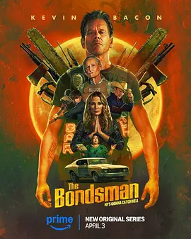

6.0
地狱担保人
The Bondsman
2025
美国
评分 6.0
导演:
萨娜·哈姆里 / 劳伦·沃尔克斯坦 / 托尔·弗罗伊登塔尔
演员:
凯文·贝肯 / 达蒙·海瑞曼 / 詹妮弗·内特尔斯 / 麦克斯维尔·詹金斯 / 贝丝·格兰特
类型:
剧情,动作,恐怖
剧情简介
哈布·哈罗兰曾是小镇上最顽强的赏金猎人，枪声、泥土味和夜色，是他生活的全部背景。直到某晚，他在一次看似普通的追捕中遭到残忍杀害，生命被硬生生按进黑暗深处。死亡本该终结一切，却在魔鬼介入后，将他重新拉回尘世——带着新的使命，也带着他从未能摆脱的罪与惩罚。复活后的哈布不再拥有温度，他的皮肤似乎总带着阴冷的触感，眼底像藏着没燃尽的火星。他被迫为地狱效力，追捕那些从深渊越狱的恶灵。这些逃犯伪装成普通人，潜伏在餐厅、田野、破旧加油站或废弃的高速路旁，一瞬间就能暴露出令人反胃的真身。哈布在追逐中不断面对这些怪异、腐烂与变形的形体，它们的存在就像某种恶意正在撕开现实的表面。更棘手的是他的家人——疏远已久、充满芥蒂，又偶尔会在最危险的时刻伸出援手。妻子的眼神带着试探，儿子的怨气掺着好奇，小镇居民则在恐惧与流言之间徘徊。复活后的哈布不知如何面对爱，也不知如何面对自己。他在追捕恶魔的缝隙里，看见自己曾做出的那些伤害，在枪口、烈风与地狱命令的夹击中，他开始追问：究竟是什么把他推入深渊？又是谁给了他第二次机会？八集的篇幅让每一次对抗都紧凑得像拉满的弓弦。尘土飞扬的乡间公路、废弃谷仓里的回声、酒吧霓虹灯下的寂静，都成了哈布与恶魔周旋的战场。而在硝烟、反抗与恐怖之中，他试图找回的不是荣誉，而是被时间夺走的温情与一段未完成的乡村旋律。